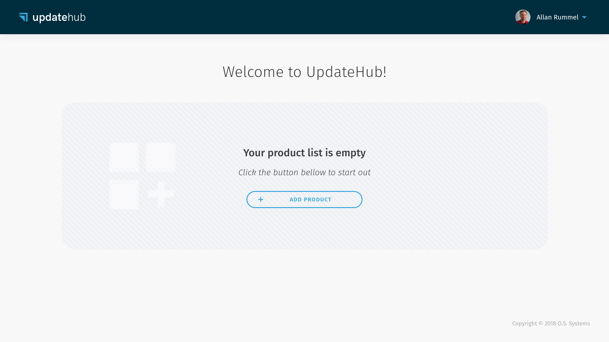

Quick starting with RaspberryPi 3¶
In this step-by-step we show how easily you can generate a Linux image, that has UpdateHub support, using Yocto Project in a Raspberry Pi 3 development board. So you can get to know UpdateHub in a practical way and see how simple it is to keep your devices updated in the field using a secure way of communication.
We assume that you have previous experience with the Yocto Project, know the main terms and have already created an image using it. If you are new to this tutorial, you can use it.
What You Will Need¶
To follow this guide, you will need the following:
- A Raspberry Pi 3 Model B or B+
- An 4 GB or larger micro SD card
- An Ethernet cable for wired connectivity to the internet
- An UpdateHub account to access the hosted server
An UpdateHub account allows manager even 5 devices; for more support and features is advisable migrate your plan.
Step guide¶
In order to generate an image that connects a device to the UpdateHub Cloud, we will first have to prepare the Yocto Project environment with the basic layers to generate an image with support for UpdateHub.
In addition to the layers, you will need to configure some variables that are generated on the Dashboard. The first is the product identifier to which the device and the image will be connected. Then we will have to generate an access key in Settings that will authenticate the device when it accesses the server.
At this point, we check the local.conf file to verify that everything is correct and build the image. That's it! Now just flash the image on the device and it is prepared with OTA support.
Additionally we update the image by adding ssh support and we send the updated image to UpdateHub Cloud and show how simple an update of your device is with the create a rollout.
First step: preparing the Yocto Project environment¶
The first step is to initialize the environment to build a Linux image using Yocto Project and for that we need to fetch all the needed layers, that includes the main OE-Core layers, the BSP layer that adds support to Raspberry Pi and the layers that add support to UpdateHub.
To get the platform you need to have Repo (a tool for manager git repositories) installed:
For Debian/Ubuntu based distros run:
sudo apt-get install repo
For others distros, check the distro documentation or install repo manually:
mkdir -p ~/.bin
PATH="${HOME}/.bin:${PATH}"
curl https://storage.googleapis.com/git-repo-downloads/repo > ~/.bin/repo
chmod a+rx ~/.bin/repo
To download the platform source, that will download all layers:
mkdir updatehub-get-started cd updatehub-get-started repo init -u https://github.com/fbertux/updatehub-yocto-project-get-started.git repo sync
Setup the environment with:
source ./setup-environment build
At the end of the commands you have all metadata you need to start to work.
Second step: creating a product¶
One of the variables needed to generate the image is the product identifier that is generated when creating a Product.
To create a Product just go to Dashboard and click on Add product.

By doing that the following dialog will be displayed. You should choose a Product name and in Owner choose Me.
About the name and owner
Bear in the mind that after you create a Product you can not renamed or deleted it, and you can not transfer it to a organization or vice versa, so have sure you are choosing the correct name and the owner.

After the Product has been created a Unique Identifier Number (UPDATEHUB_PRODUCT_UID) is generated to identify it. This number, should be added to your build in order to allow the UpdateHub agent, which runs inside the target device, to communicate with the UpdateHub Cloud.

For convenience, you can add the UPDATEHUB_PRODUCT_UID to your
build/conf/local.conf configuration file when prototyping. However, as this
is a information that will be permanent for the whole product life cycle, it
should be put inside your distribution configuration file, or image recipe.
In case you didn't copy the Product Unique Identifier Number in the moment that you create it on the UpdateHub Cloud don't worry. To get access to this information again you must click on the Product icon and the Unique Identifier Number will be shown to you.
Once you have logged in, the Products page will display the list of your own products and the other products you have access to.

Third step: generating an Access Key¶
To authenticate and authorize requests for a project build with the UpdateHub Cloud you must have a security credential in the form of an application access key. Each access key is specific to your user and is used to upload the packages update or any other external integration which needs to access the UpdateHub API.
In order to generate an Access Key you must enter the Settings menu and click on the + Request Access Key button. Choose a name for the key and select the API Key owner as Me.

Once the Access Key is created a dialog will appear to show the security credentials.
Save your keys
On the moment that this window is closed the keys will not be shown again and if you lose them you must revoke the Access Key and generate a new one.

Include these variables in build/conf/local.conf:
UPDATEHUB_ACCESS_ID = "your-email@gmail.com-8bc21121049af..." UPDATEHUB_ACCESS_SECRET = "9b1fcee96795fa5dea5cd04cb1d2..."
Fourth step: Configuring the local.conf file¶
Come back in Yocto Project directory in your computer. After fetching the
bitbake layers is important to change some variables in the local.conf file.
Here we'll put the variables that were generated before: UPDATEHUB_PRODUCT_UID from the Product and the UPDATEHUB_ACCESS_ID and UPDATEHUB_ACCESS_SECRET generated in Settings.
UPDATEHUB_PRODUCT_UID = "05344b71c3e9f8..." UPDATEHUB_ACCESS_ID = "your-email@gmail.com-8bc21121049af..." UPDATEHUB_ACCESS_SECRET = "9b1fcee96795fa5dea5cd04cb1d2..."
UPDATEHUB_PACKAGE_VERSION_SUFFIX is used to add a suffix in the version of the image being generated. This is useful for placing a version number and incrementing with each new image.
UPDATEHUB_PACKAGE_VERSION_SUFFIX ="-test-image-1.0"
Finally the final of your local.conf file should seem like this.
UPDATEHUB_PRODUCT_UID = "05344b71c3e9f8..." UPDATEHUB_ACCESS_ID = "your-email@gmail.com-8bc21121049af..." UPDATEHUB_ACCESS_SECRET = "9b1fcee96795fa5dea5cd04cb1d2..." UPDATEHUB_PACKAGE_VERSION_SUFFIX = "-test-image-1.0"
Fifth step: building an image¶
With all variables configured, now we can generate our image: Open a terminal, go to your build directory and type:
bitbake updatehub-image-base
The generate image process can take a good time, it is dependent directly of the host resources.
Now it's time to flash the image in the SD card. Then in a terminal go to this directory:
build/tmp/deploy/images/raspberrypi3/
and type this:
Check the name of the SD card before executing the command below!
You can check the device name that correspond to SD card using command dmesg
zcat updatehub-image-base-raspberrypi3.wic.gz | sudo dd of=/dev/sdX
With the SD card ready, you can insert it into the target and connect it to RaspberryPi. The image is configured to obtain an IP address using DHCP. To access the console, the user is set to root” and doesn't need to enter a password, just hit Enter.
You can confirm the version of the image that is running on the target with the command:
cat /etc/os-release
You will see the version that you put in the local.conf file.
O.S. Systems Embedded Linux 19.10 raspberrypi3 ttyS0 root@raspberrypi3:~# cat /etc/os-release ID="oel" NAME="O.S. Systems Embedded Linux" VERSION="19.10" VERSION_ID="19.10-test-image-1.0" PRETTY_NAME="O.S. Systems Embedded Linux 19.10" UPDATEHUB_PRODUCT_UID="05344b71c3e9f8..."" root@raspberrypi3:~#
Sixth step: changing the image¶
Now that the whole upgrade process has been explained, we'll add support for an SSH server on the target and create an update package to install this functionality.
To add support for the SSH OpenSSH server add the following line to the
conf/local.conf file:
IMAGE_FEATURES += "ssh-server-openssh"
And change the variable UPDATEHUB_PACKAGE_VERSION_SUFFIX to use version of our test image:
UPDATEHUB_PACKAGE_VERSION_SUFFIX = "-test-image-2.0"
Seventh step: sending a new image version¶
We can save the file, generate a new update package, and send the new file to UpdateHub Cloud by running the same command:
bitbake updatehub-image-base -c uhupush
After sending, the package will be available on the Dashboard in the Package section of the corresponding Product page.
Eighth step: creating a rollout¶
Rollout is the process of sending an updated image to devices in the field through UpdateHub Cloud. To create a rollout we have to access the dashboard, access the Product card we created before, and then click on Create rollout. In the displayed window choose the available version and click on Save and start.
The status of the update process is shown in the displayed window, and can also be followed by the Devices section for each device individually.
When the status shows updated, we can access the target using the SSH protocol, for this type in the host:
ssh root@TARGET_IP_ADDR
No password is required, just hit Enter and we will be in the target
console. Again we can check the version with the contents of the
/etc/os-release file.
Here we finish our quick start, but we invite you to learn more about UpdateHub in the rest of the documentation.
If you have encountered difficulties or have any questions or suggestions, please contact us through the Gitter or send us an email by contact@updatehub.io.